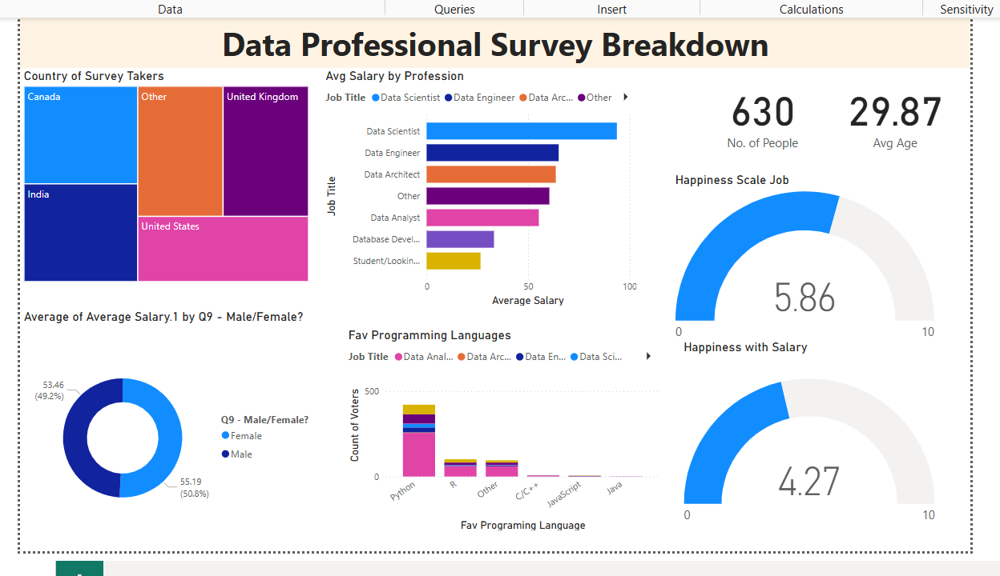
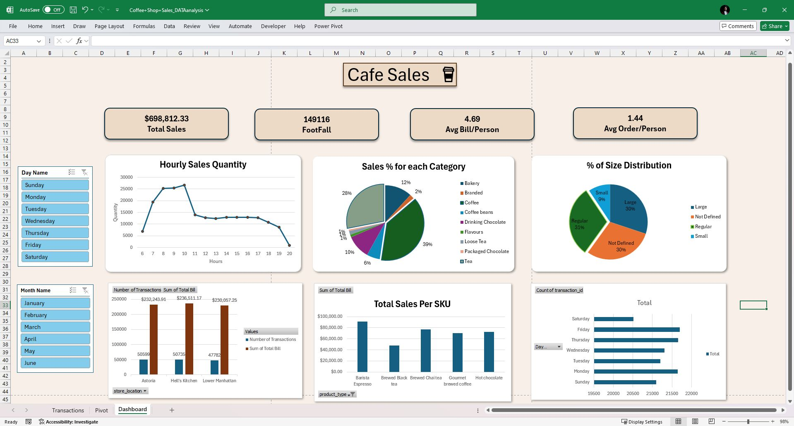

Data Professionals Survey Dashboard – Power BI
Date: March 2025
- Built an interactive dashboard in Power BI using real survey data from 600+ respondents.
- Performed ETL and data cleaning using Power Query (removing nulls, splitting columns, applying data types).
- Designed visuals (bar charts, gauges, tree maps), used DAX and slicers for dynamic filtering and user interaction.

Sales Insights Dashboard – Excel
Date: August 2024
- Analyzed 150,000+ retail sales records using Power Query and Excel formulas to uncover trends and behaviors.
- Developed an interactive dashboard using Pivot Tables, Power Pivot, Slicers, and KPIs.
- Tracked metrics like footfall, average bill, and SKU-level sales across café locations.

Financial Data Analysis – Excel
Date: February 2024
- Cleaned and transformed financial data using Excel to compute sales, cost, and gross profit for a case study.
- Built dynamic pivot tables and charts to analyze profitability across time and business segments.
- Completed as part of Intermediate Financial Accounting (ADMS 2500).